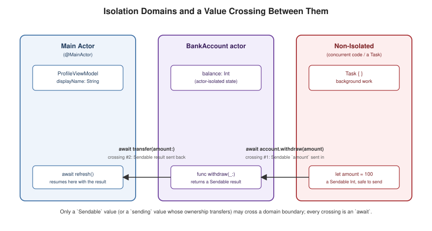

Actors, Isolation and Sendable
|
This content was generated with the assistance of AI and should be verified against the official documentation before being relied on in production. |
For Sendable and isolation in a server framework, see Swift Concurrency in Vapor.
Swift 6’s headline feature is not a new syntax but a compile-time guarantee: data races are a compile error,
not a runtime possibility to be tested for. Every value that can cross between concurrently-executing code must
be provably safe to do so, and the compiler enforces this statically through isolation domains and the
Sendable protocol rather than relying on locks a programmer might forget to take.
Data Races and What Swift 6 Guarantees
class Counter { // a plain, non-isolated class: NOT safe to share across concurrent code
var value = 0
}
// In the Swift 6 language mode, code that shares `Counter` across concurrent tasks
// without synchronization is a COMPILE ERROR, not a runtime data race waiting to happen.A data race happens when two threads access the same mutable state at the same time and at least one access is
a write, with no synchronization ordering the two — historically a runtime bug that might not show up until
production, under load, on one specific device. Swift 6’s language mode moves this check to compile time: the
compiler tracks which isolation domain every piece of mutable state belongs to, and refuses to compile code
that would let two domains touch the same state concurrently without going through a Sendable-checked hand-off.
Swift 5 code (or Swift 6 code still in the Swift 5 language mode) only ever warns about the same violations,
which is why migrating to the Swift 6 language mode is treated as a distinct, deliberate step (see
Build and Tooling) rather than something that happens
silently on toolchain upgrade.
Isolation Domains, the Main Actor, and @MainActor
@MainActor
final class ProfileViewModel { // every stored property and method here is isolated to the main actor
var displayName = ""
func refresh() async {
let name = await fetchUserName(id: "42") // fetchUserName itself is not main-actor-isolated
displayName = name // back on the main actor: safe to touch `displayName`
}
}
@MainActor
func updateUI(with name: String) { // a free function can be isolated too, not just a type
print("UI now shows \(name)")
}An isolation domain is the compiler’s unit of "who is allowed to touch this state without additional
synchronization" — code and data in the same domain can interact freely, while crossing between domains requires
an await and a Sendable-checked value. The main actor is the isolation domain that always corresponds to
the main thread, and @MainActor is the annotation that pins a type, a property, or a function to it — the
standard way to guarantee UI-adjacent state is only ever touched from the main thread, replacing the older
convention of manually dispatching back to DispatchQueue.main.

Actors
actor BankAccount {
private var balance: Int = 0
func deposit(_ amount: Int) { // actor-isolated: only the actor's own code may call this synchronously
balance += amount
}
func withdraw(_ amount: Int) throws {
guard amount <= balance else { throw ValidationError(field: "amount", reason: "insufficient funds") }
balance -= amount
}
nonisolated func accountDescription() -> String { // opts out of isolation: cannot touch `balance`
"a bank account"
}
}
let account = BankAccount()
func transfer(amount: Int) async throws {
try await account.withdraw(amount) // cross-actor call: requires `await`, runs on the actor's own domain
}actor declares a reference type whose stored properties are, by default, isolated to that actor’s own domain:
code inside the actor’s methods can touch balance directly and synchronously, but code outside it must
await every call, because the call has to hop into the actor’s isolation domain to run. This single rule — external access always suspends — is what makes an actor’s mutable state safe to share across concurrent code
without a manual lock: the compiler, not the programmer, enforces that only one piece of code touches balance
at a time. nonisolated opts a specific member out of that isolation (useful for a method or computed property
that provably never touches actor-isolated state), and an isolated parameter lets a free function declare that
it runs on a specific actor instance passed to it, rather than being a member of that actor’s type.
Reentrancy
actor TicketBooth {
private var soldOut = false
func sell() async -> Bool {
guard !soldOut else { return false }
await Task.sleep(for: .milliseconds(10)) // suspends -- another call to `sell()` can interleave here
soldOut = true // re-checked assumption after resuming: still needs the guard
return true
}
}An actor’s methods are reentrant: when a method suspends at an await, the actor is free to run another
call on the same actor in the meantime, rather than blocking every other caller until the first call resumes — this keeps a busy actor responsive, but it means state can change during a suspension, so code must not assume
that everything checked before an await still holds immediately after it resumes (the guard !soldOut above
would need re-verifying if sell() suspended again after the sleep).
Global Actors
@globalActor
actor DatabaseActor {
static let shared = DatabaseActor()
}
@DatabaseActor
final class UserRepository { // every instance's state is isolated to DatabaseActor, not the main actor
var cache: [String: String] = [:]
}A global actor is a type marked @globalActor that provides a single shared actor instance (shared), which
can then annotate other declarations the same way @MainActor does — @MainActor is itself just the best-known
global actor, defined by the standard library. A custom global actor like DatabaseActor above is the idiomatic
way to give an entire subsystem (all database access, say) one shared isolation domain without every type in that
subsystem needing to literally be the same actor type.
Sendable and @Sendable Closures
struct Point: Sendable { // implicitly Sendable too: all-value-type stored properties
var x: Double
var y: Double
}
final class Logger: Sendable { // a class can conform if every stored property is immutable and Sendable
let prefix: String
init(prefix: String) { self.prefix = prefix }
}
func schedule(_ work: @Sendable @escaping () -> Void) { // the closure itself must be safe to hand across actors
Task { work() }
}
let logger = Logger(prefix: "[app]")
schedule { print("\(logger.prefix) started") } // `logger` captured; must itself be SendableSendable marks a type as safe to share across isolation domains — a struct or enum conforms automatically (and
usually implicitly) when every stored property is itself Sendable; a class must be final with only immutable,
Sendable stored properties (or be an actor, which is always Sendable) to conform, since a mutable class
instance shared across domains would reintroduce exactly the race the whole model exists to prevent. @Sendable
on a closure type extends the same requirement to what the closure captures: every captured value must itself
be Sendable, which is why closures passed to Task { }, task groups, and most concurrency APIs are implicitly
required to be @Sendable (see Closures).
sending Values Across Isolation Boundaries
final class Buffer { // not Sendable -- mutable, non-actor class
var bytes: [UInt8] = []
}
func consume(_ buffer: sending Buffer) async { // `sending`: ownership transfers, `buffer` unusable afterward
Task {
buffer.bytes.append(0) // safe: the caller gave up its own access when it passed `buffer`
}
}
func producer() async {
let buffer = Buffer()
await consume(buffer) // `buffer` is a non-Sendable type but ownership transfer is still safe
// using `buffer` again here would be a compile error: it was `sending` into `consume`
}sending, introduced by SE-0430 (Swift 6), lets a parameter or return value cross an isolation boundary even
when its type is not Sendable, provided the compiler can prove the caller gives up all further access to it — the value’s ownership transfers rather than being shared, so there is no concurrent access left to race. This is
strictly more precise than requiring Sendable on the type itself: Sendable says "always safe to share," while
sending says "safe this one time, because nothing else still holds a reference to it."
@unchecked Sendable and @preconcurrency
final class LegacyCache: @unchecked Sendable { // opts out of compiler verification -- programmer's own guarantee
private let lock = NSLock()
private var storage: [String: String] = [:]
func value(for key: String) -> String? {
lock.lock(); defer { lock.unlock() }
return storage[key]
}
}
@preconcurrency import SomeObjCFramework // silences Sendable/isolation warnings from a not-yet-audited module@unchecked Sendable is the escape hatch for a type that is actually safe to share across domains — typically
because it manages its own synchronization internally, like LegacyCache's lock above — but whose safety the
compiler cannot verify from its structure alone; it is a manual promise, not a compiler-checked one, so it should
be reserved for types whose internal locking has genuinely been audited. @preconcurrency import is the
equivalent escape hatch at the module boundary: it tells the compiler to trust an imported module’s
un-annotated APIs as if they predated Swift’s concurrency checking, downgrading new Sendable/isolation errors
from that module back to warnings until the dependency itself adds proper annotations.
Strict Concurrency Checking and the Swift 6 Language Mode
The Swift 6 language mode is what makes every rule above a hard compile error instead of a warning; it is opted
into per target (via swiftSettings: [.swiftLanguageMode(.v6)] in a package manifest, see
Swift Package Manager) or per-file with
@preconcurrency annotations bridging the gap during migration. Before committing to Swift 6 mode, the
-strict-concurrency=complete compiler flag can be enabled under the Swift 5 language mode to surface the same
diagnostics as warnings first, which is the recommended way to migrate a large codebase incrementally rather than
flipping the language mode and fixing every resulting error at once.
Default Actor Isolation (Swift 6.2)
// Package.swift, per target:
.target(
name: "App",
swiftSettings: [.defaultIsolation(MainActor.self)]
)SE-0466 (Swift 6.2) lets a target opt into @MainActor as the default isolation for every declaration that
does not otherwise specify one, rather than every type being non-isolated (global/concurrent) unless explicitly
marked @MainActor — a better fit for the common case of an app target where most code is UI-adjacent and only
a minority of types need to be explicitly nonisolated or actor-isolated to something else. A library target
generally should not opt into this, since its isolation defaults become part of its public contract for every
client.
Swift 5 Language-Mode Differences
Under the Swift 5 language mode — the default when a package or target does not explicitly opt into Swift 6 — every rule in this page still exists and is checked, but a violation (a non-Sendable value crossing actors, a
missing await implied by isolation) is emitted as a warning, not an error, and some checks are skipped
entirely unless -strict-concurrency=complete is passed explicitly. This is deliberate: it lets an existing
codebase upgrade its Swift tools version without every concurrency issue becoming a hard build failure on day
one, at the cost of the compiler no longer guaranteeing the data-race freedom Swift 6 mode promises. See the
Migrating to Swift 6 guide (below) for the recommended incremental path from Swift 5 mode, through
-strict-concurrency=complete, to Swift 6 mode.
The Synchronization Module: Mutex and Atomic
import Synchronization
final class Counter: Sendable {
private let value = Mutex(0) // low-level lock, an alternative to actor isolation for hot paths
func increment() {
value.withLock { $0 += 1 }
}
}
let flag = Atomic<Bool>(false) // lock-free atomic access, for the simplest shared-flag case
flag.store(true, ordering: .relaxed)The Synchronization module gives low-level, non-actor synchronization primitives for the rare case where
actor-based isolation’s suspension overhead is unacceptable on a hot path: Mutex<Value> is a lightweight
mutual-exclusion lock wrapping a value directly (safer than a bare NSLock, since the locked value cannot be
touched without going through withLock), and Atomic<Value> gives lock-free atomic operations for simple
scalar state. These are deliberately a lower-level tool than actors — reach for an actor first, and only drop
to Mutex/Atomic where profiling shows actor suspension overhead actually matters.
Worked Example: A Race for the Last Copy
Actors exist to answer one question: who may touch this mutable state, and when? An actor owns its stored properties and processes calls to them one at a time, so there is no data race on them by construction. The listing models a loan ledger. A hundred concurrent tasks all try to lend the same ISBN and the actor guarantees that exactly one succeeds.
// An actor protects the bookshelf's loan ledger; many tasks may call it concurrently.
actor Ledger {
private var loans: [String: String] = [:] // isbn -> reader
private(set) var attempts = 0
func lend(_ isbn: String, to reader: String) -> Bool {
attempts += 1
if loans[isbn] != nil { return false } // no await inside: check and set are atomic
loans[isbn] = reader
return true
}
func holder(of isbn: String) -> String? { loans[isbn] }
// Non-isolated members can be called without await, but cannot touch isolated state.
nonisolated var kind: String { "ledger" }
}
// Value types are Sendable when all their stored properties are.
struct Request: Sendable {
let isbn: String
let reader: String
}
@MainActor
final class ViewModel {
var status = "idle"
func update(_ text: String) { status = text } // isolated to the main actor
}
// A nonisolated async function reaches main-actor state with await.
func showStatus() async {
let model = ViewModel()
await model.update("loaded")
print(await model.status)
}
@main
struct Demo {
static func main() async {
let ledger = Ledger()
// 1. 100 tasks race for the same book: exactly one wins.
let winners = await withTaskGroup(of: Bool.self) { group in
for i in 0..<100 {
group.addTask { await ledger.lend("978-0", to: "reader\(i)") }
}
var wins = 0
for await won in group where won { wins += 1 }
return wins
}
print("winners:", winners, "attempts:", await ledger.attempts)
print(ledger.kind) // nonisolated: no await
print(await ledger.holder(of: "978-0") != nil)
// 2. Hop to the main actor from nonisolated async code.
await showStatus()
// 3. Sendable values cross actor boundaries by copy.
let request = Request(isbn: "111", reader: "Ada")
let ok = await Task.detached { await ledger.lend(request.isbn, to: request.reader) }.value
print("detached lend:", ok)
}
}winners: 1 attempts: 100
ledger
true
loaded
detached lend: true(The @main entry point means the listing is compiled as a library-style module, with swiftc -parse-as-library.)
-
Exactly one winner, 100 attempts. Inside
lend, "is the book free?" and "record the loan" run without a suspension point, so no other task can slip between the check and the write. Because actor methods run without interleaving only between suspension points, the guarantee is lost as soon as anawaitappears in the middle of such a check-then-act sequence (see the pitfalls below). -
awaitmarks the crossing. Every call tolend,holderor theattemptsproperty from outside the actor needsawait, because the caller may have to wait for the actor to be free.ledger.kindisnonisolatedand needs none: it touches no isolated state. -
@MainActoris a global actor.ViewModelis isolated to the main actor, so callingupdatefromshowStatus(which is not on the main actor) is a suspension point that hops to the main thread and back. -
Sendableis the passport.Requestcrosses into a detached task because a struct ofSendablefields isSendableand is copied. A mutable class instance does not qualify: in Swift 6 mode passing it across isolation domains is a compile-time error, not a runtime race.
Reentrancy: The One Surprise
Actors are reentrant: while an actor method is suspended at an await, other messages may run and change the actor’s
state. This code is therefore wrong.
func lendSlowly(_ isbn: String, to reader: String) async -> Bool {
guard loans[isbn] == nil else { return false } // check
try? await Task.sleep(for: .milliseconds(10)) // suspension point: others may run here
loans[isbn] = reader // act: state may have changed
return true
}Two callers can both pass the guard before either assigns: starting two such calls together with async let and printing both results prints true true. (A bare Task.yield() does not always suspend, so the sleep is what makes the interleaving reliable.) The rule is to finish the
check and the update before the first await, or to re-check after resuming.
Pitfalls
-
Do not assume an actor is a lock: it provides isolation, not ordering across several calls; two consecutive calls from one task can be separated by other tasks' messages.
-
nonisolatedaccess to isolated stored properties is an error; make the propertyletof aSendabletype if it must be read withoutawait. -
Hopping to
@MainActorand back has a cost; batch updates instead of awaiting the main actor in a tight loop. -
Task.detacheddoes not inherit the actor, priority or task-locals of its creator; prefer a child task (a task group orasync let) unless you really want to detach.
See Also
-
Async/Await and Tasks —
Task, structured concurrency, and where isolation-domain crossings actually happen at runtime. -
Closures — capture lists and
@Sendableclosure syntax in full. -
Dispatch and Legacy Concurrency — the pre-actor synchronization primitives (
DispatchQueue, locks, semaphores)Mutex/Atomicand actors supersede for new code. -
Build and Tooling — enabling the Swift 6 language mode and
-strict-concurrencyper target.
References
TSPL: Concurrency → Isolation, The Main Actor, Actors, Global Actors, Sendable Types; Migrating to Swift 6; SE-0430; SE-0466.